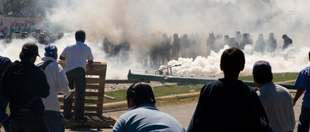

< return to music page
Last Transmission
In 2006, the people of Oaxaca, Mexico rose up and drove out the police and politicians who had savagely repressed, oppressed, and exploited them. A months-long standoff ensued between the occupied city and its former rulers. When anarchist and independent media journalist Brad Will was murdered by government officials—as dozens of Oaxacans had been before him—the Mexican government cynically exploited his death as an excuse to send thousands of military police to invade Oaxaca. For days, people armed only with rocks, firecrackers, and Molotov cocktails fought valiantly against armored soldiers; in the end, only the radio station behind the walls of the autonomous university remained in the hands of the rebels.
Most of us knew Brad. We weren’t in Oaxaca, but we do our best to complement liberation struggles in other parts of the world with our own efforts here at home.
If we don’t win:
The last holdout is surrounded, the soldiers closing in
The last broadcast hits the airwaves from the partisans of could-have-been
To the fighters now in hiding and the prisoners of fear
In a world wrapped tight in walls from which all hope has disappeared:
“Comrades and companions—we’re not beaten yet
We’ll fight on from the shadows, from prisons
We’ll fight to the death”
Nos conocemos en las calles de la ciudad de oaxaca
Niñas con cohetes, hombres con palos, y abuelas con fuertes voces
Cada zócalo y cada calle liberados; cada edificio del estado ocupado
Toda la gente junta
Luchamos batallas callejeras por horas
Luchamos contra sus gases lacrimógenos y sus balas con piedras y cócteles molotov
Manteniéndonos firmes, en esta tenue frontera, mientras esperamos efímeros mundos
Nos pueden secuestrar en las barricadas, desaparecer nuestras madres e hijos
Nos pueden matar en las calles
Pero lucharemos junt@s
Contra la invasión de la zona autónoma por la PFP, la armada conquistadora del gobierno mejicano
Pueden cerrar la ciudad, pueden reestablecer el control, pero no pueden pisotear el espíritu jovial de la rebelión
La gente se levantará de nuevo
Sólo son los oficiales y los soldados los que se levantan solos mirando sus reflejos en los Espejos diciendo:
Soy represor
Soy asesino
Soy violador
If we could win:
All the walls would crack and rupture, the soldiers turn their guns around
And the liberated zones would spread from town to besieged town
But now the fighters are in hiding, and we’re prisoners of fear
In a world chained up in laws from which all hope has disappeared
“Compañeras y compañeros—todavía no hemos perdido
Lucharemos de las sombras
Lucharemos en secreto”
Wars that never end, and revolutions that never begin
But we can win